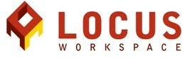

Ahoj holky a dámy!
Do Prahy přijíždějí Rails Girls. Během dvoudenního workshopu se ponoříme do báječného světa technologií a Ruby on Rails.
Registrujte se zdarma do 12. prosince.
Pro aktuální informace sledujte náš Twitter @RailsGirlsPrg.
Hello girls and ladies!
Rails Girls comes to Prague! During the free two-day workshop we'll dive into the magical world of information technologies and Ruby on Rails.
Apply now! Applications are open until the 12th of December.
Follow us on Twitter at @RailsGirlsPrg for all of our latest updates!
Naučíte se navrhovat, prototypovat a kódovat weby - s pomocí našich koučů.
You learn designing, prototyping and coding with the help from our coaches.
Potřebujete jenom notebook, zvědavost a kapku představivosti.
You need your own laptop, curiosity and a sprinkle of imagination!
Chcete se zapojit? Hledáme dobrovolníky a kouče Ruby on Rails. Ozvěte se na Twitteru!
Want to help? We are looking for volunteers and Rails coaches. Contact us in Twitter!
| 18:00 - |
Install partyPotkej ostatní účastníky ještě před akcí. Přines si s sebou počítač, takže ti budeme moci nainstalovat Rails předem. Misto: Locus Workspace, Krakovská 1307/22, Praha 1Installation partyGet know the attendees a little bit before hand. Bring your laptop if you can, so we can install Ruby on Rails for you.Where: Locus Workspace, Krakovská 1307/22, Praha 1 |
|---|---|
| 21:00 - |
Večeře pro koučeVšechny kouče zveme na večeři, kde projdeme program pro následující den. Coach dinnerAll of the coaches are welcome to our coach dinner, where we'll go through the program for the next day. |
| 9:00 - 10:00 |
Registrace, káva, instalace Ruby on RailsRáno dokončíme instalaci Rails na počítačích. Registration, coffee and installation festDuring the morning we’ll install Ruby on Rails on your computer. |
|---|---|
| 10:00 - 10:15 |
PřivítáníCo nás přes den čeká a pár slov od sponzorů workshopu WelcomeOutline of the day & word from sponsors |
| 10:20 - 10:45 |
Návrh webové aplikace - workshopDesigning your web app - workshop |
| 10:50 - 11:10 |
Tryruby.orgPojďme kódovat! |
| 11:10 - 13:00 |
WORKSHOPRovnou se pustíme do první aplikace. |
| 13:00 - 13:30 | ObědLunch |
| 13.30- 13:45 |
Bentobox - Understanding Web AppsRecap of what we’ve learned and how it all fits together.Bentobox - Chápeme webové aplikaceShrnutí toho, co jsme se zrovna naučily - a jak to funguje dohromady. |
| 13:45 - 14:30 |
Lighting talks od koučůLighting talks from coaches |
| 14:30 - 16:30 |
WORKSHOPRozšíření a vylepšení aplikace.Extend your application. |
| 20:00 - |
AfterpartyVolně přístupná. Poznej i další lidi, které baví technologie.Open for everyone, meet cool people interested in tech. |
Začátek registrací: 20. listopadu
Uzávěrka registrací: 10. prosince
Potvrzení registrací rozešleme 11. prosince
Místo: Locus Workspace, Krakovská 1307/22, Praha 1
Applications start: 20th of November
Applications close: 10th of December
Acceptances informed: 11th of December
Location: Locus Workspace, Krakovská 1307/22, Praha 1
Rails Girls Prague spoluorganizuje CSRUG a další naši báječní partneři.
Chcete pomoci? Hledáme partnery a sponzory pro tuto neziskovou akci. Napište nám!
Rails Girls Prague is co-organized with CSRUG and our awesome partners.
Want to help? We're looking for partners & sponsors for the non-profit event! Email us!
 Expats.cz is a community portal for the Prague business and international community (English speaking). You can find literally everything you need to live in Prague, from doctors, lawyers, restaurants and real estate agencies to schools, language training and places to meet other members of the expatriate community.
Expats.cz is a community portal for the Prague business and international community (English speaking). You can find literally everything you need to live in Prague, from doctors, lawyers, restaurants and real estate agencies to schools, language training and places to meet other members of the expatriate community.
Expats.cz je pražský komunitní portál pro mezinárodní anglicky mluvící (nejen) byznys komunitu. Jsou tu k dispozici doslova všechny informace, které potřebují cizinci žijící v Praze - informace o lékařích, právnících, tipy na restaurace nebo realitky, školy, jazykové kurzy nebo místa, kde se mohou cizinci navzájem setkávat.

Locus Workspace.
In a coworking space like Locus you are surrounded by other people who are there specifically to work. The energy and sense of focus is contagious. Locus also hosts events to help with professional development, and provides tools to facilitate goal achievement.
V coworkingových centrech, jako je Locus, se setkáte s lidmi, kteří sem přišli pracovat. Energie a soustředění jsou tu nakažlivé. Locus také poskytuje prostor pro události a setkání napomáhající profesionálnímu rozvoji. Nabízí vše, co potřebujete, abyste dosáhli svých cílů.
Virtualmaster provides on-demand Virtual Servers, application management and infrastructure automation.
Virtualmaster nabízí on-demand Virtuální Servery, management aplikací a automatizaci infrastruktury.
 Vendavo is the leading provider of price management and optimization software for business-to-business companies worldwide.
Vendavo is the leading provider of price management and optimization software for business-to-business companies worldwide.
Vendavo je přední poskytovatel softwarových nástrojů pro price management a optimalizaci, který používají B2B společnosti na celém světě.
SUSE is a Linux company. We build our own Linux distribution and
provide our customers with related products and services, most of them
open source. We do a lot of Rails development too!
SUSE je linuxová firma. Vyvíjíme vlastní linuxovou distribuci a našim
zákazníkům poskytujeme související produkty a služby, z nichž většina
je open source. A vyvíjíme i v Rails!
 Cristina Santamarina, organizer
@RailsGirlsPrg
Ladislav Prskavec, couch, organizer
@abtris
Karel Minařík, couch
@karmiq
Cristina Santamarina, organizer
@RailsGirlsPrg
Ladislav Prskavec, couch, organizer
@abtris
Karel Minařík, couch
@karmiq
 Jana Dvořáková, coach
@jana4u
Vojtech Hyza, coach
@vhyza
Adam Kliment, coach
@ntmlk
Zlatka Šubrová, coach
@1zlatka
Jiří Kubíček, coach
@kubicek
Eliška Hutníková, organizer
@eliskah
Jiří Kratochvíl, coach
@sedrickcz
Filip Zrůst, coach
@frzng
Patrik Jíra, coach
@papricek
Pavel Dušánek, coach
@dusanet
Jana Dvořáková, coach
@jana4u
Vojtech Hyza, coach
@vhyza
Adam Kliment, coach
@ntmlk
Zlatka Šubrová, coach
@1zlatka
Jiří Kubíček, coach
@kubicek
Eliška Hutníková, organizer
@eliskah
Jiří Kratochvíl, coach
@sedrickcz
Filip Zrůst, coach
@frzng
Patrik Jíra, coach
@papricek
Pavel Dušánek, coach
@dusanet